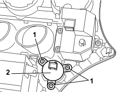

5520G30 START/STOP SWITCH FOR EASY-GO SYSTEM STARTER MOTOR - R.R.
- Path
- Procedures > 55 ELECTRICAL EQUIPMENT > 5520 ENGINE STARTING > 5520G EASY-GO STARTING SYSTEM > 5520G30 START/STOP SWITCH FOR EASY-GO SYSTEM STARTER MOTOR - R.R.
- Kind
- repair procedure (removal / refitting; the operation number is the code)
- Applies to
- all engines; all production periods
- Interactive page
- https://sloeber94.github.io/elrnDB-aBrrSpdr/en/#/946002367
Applies to: all engines; all production periods
 Removing
Removing
 Refitting
RefittingOp. 5010C34 AIR OUTLET IN CONSOLE - R+R
Remove the radio or, alternatively, the navigator.
Op. 5570T80 CAR RADIO EQUIPMENT - R+R
Op. 7040A17 AIR CONDITIONER CONTROLS
1. Undo the bolts.
2. Remove the switch

Applies to: all engines; all production periods
Refitting
Removing- Check that the switch is not damaged.
- Position the switch
- Tighten the bolts.
Op. 7040A17 AIR CONDITIONER CONTROLS
Topics linked from this page (3)
- 5010C34 AIR OUTLET IN CONSOLE - R+R
- 5570T80 CAR RADIO EQUIPMENT - R+R
- 7040A17 AIR CONDITIONER CONTROLS
Topics that link to this page (9)
- B009 ENGINE DOES NOT START WITH LEVER IN P OR N
- K163 TEG LOCK WARNING LIGHT ON CONSTANTLY
- 5520GA IGNITION PUSH BUTTON CHECK
- 5580ED ELECTRIC STEERING LOCK CHECK
- 7040A17 AIR CONDITIONER CONTROLS
- E5010 IGNITION AND RECHARGING - WIRING DIAGRAM
- E5010 IGNITION AND RECHARGING - COMPONENT LOCATION
- E5010 IGNITION AND RECHARGING - WIRING DIAGRAM
- E5010 IGNITION AND RECHARGING - COMPONENT LOCATION